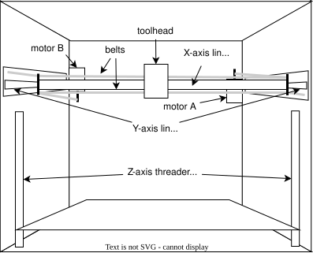

H2SPrinter must be ...
placed on a flat and stable surface.
operated within temperatures between 15-30C (60-85F).
If the temperature is ...
The H2S comes with an "active exhaust fan" to blow out hot air (and fumes), but in warmer climates that may not be enough. The operating space recommended is 80cm width x 102cm depth x 105cm height, which covers the space required in the back for the exhaust and the AMS 2 Pro to sit on top. [src]
⚠️NOTE️️️⚠️
The active exhaust fan is different from the top vent. The exhaust is in the back, and apparently there are filters involved with it.
H2S's auto-calibration process attempts to adjust machine parameters. The main aspects that are calibrated are ...
⚠️NOTE️️️⚠️
It sounds like if you have additional modules, auto-calibration performs more work (e.g., vision encoder).
Trigger auto-calibration manually by navigating to [Wrench Icon] → Settings → Calibration. Perform auto-calibrate whenever ...
Filament can be loaded through either the AMS 2 Pro or the external spool holder. The external spool holder is used when ...
⚠️NOTE️️️⚠️
The source doesn't cite this, but I know for a fact that TPU is not supported by the AMS 2 Pro and must fed via the external spool holder (unless it's specifically branded as TPU for AMS, which Bambu Lab sells).
To load filament using the AMS 2 Pro, ...
To load filament using the external spool holder, ...

Along left-side of the UI are 5 options, each represented by an icon:
To calibrate the printer, navigate to [Settings] → Calibration → Print Calibration, select the desired calibrations and hit Start. [src]
To print, navigate to [Home] → Print Files and select the drive and file to load. Two drives should be present:
One a file is chosen, select the appropriate Plate and Nozzle (H2S comes with "Texture PEI" plate and "0.4mm Standard" nozzle - these should be selected as defaults). Then, hit Next select the filament to print with. Then, hit Print to begin printing. [src]
To configure the printing speed, navigate to [Controls] → Speed and select either Silent, Standard (default), Sport, or Ludicrous. [src]
⚠️NOTE️️️⚠️
An introductory YouTube video I watched mentioned that the faster the speed is, the lower quality the print will be. Some people are willing to accept lower quality prints in exchange for speed.
To perform movements of the printhead (XZ axis) and heatbed (Y axis), navigate to [Controls] → Motion and tap the adjustment buttons as necessary. [src]
⚠️NOTE️️️⚠️
This seems to only be for testing purposes and moving things to get at parts? I had to use this feature to get at a thin piece of plastic that popped off and fell on the bottom of the printer. I moved the heatbed up so I could fit my hand in and reach it.
To perform adhoc extrusion and retraction of filament, navigate to [Controls] → Nozzle & Extruder and use the up/down buttons under Extruder. [src]
⚠️NOTE️️️⚠️
This seems to be for testing purposes. But also, does this have to be done when swapping between AMS 2 Pro and manual spool feeding?
When nozzle has been swapped, navigate to [Controls] → Nozzle & Extruder and select the nozzle's type under Nozzle. [src]
To set the nozzle's temperature, navigate to [Controls] → Nozzle & Extruder and select the nozzle's temperature under Nozzle. [src]
⚠️NOTE️️️⚠️
This seems to only be for testing purposes and doesn't apply to any prints? AFAIK initiating a new print should unset this as the print needs specific temperatures based on the print and the filament used.
To set the heatbed's temperature, navigate to [Controls] → Heatbed and select the temperature. [src]
⚠️NOTE️️️⚠️
This seems to only be for testing purposes and doesn't apply to any prints? AFAIK initiating a new print should unset this as the print needs specific temperatures based on the print and the filament used.
To set the chamber's temperature, navigate to [Controls] → Chamber and select the temperature. [src]
⚠️NOTE️️️⚠️
This seems to only be for testing purposes and doesn't apply to any prints? AFAIK initiating a new print should unset this as the print needs specific temperatures based on the print and the filament used.
To turn the chamber's light on/off, navigate to [Controls] and toggle the Light switch. [src]
To configure the printer's internal climate, navigate to [Controls] → Air Condition and select either Cooling or Heating. Individual parts that control the climate (e.g., fans, heaters, and exhausts) are listed and can be individually controlled. [src]
When the mode is set to ...
To select which filaments are in the AMS 2 Pro and / or external spool holder, navigate to [Filament] and select the desired spool to input the spool's type, color, and manufacturer. Bambu Lab filaments come with RFID that allows the AMS 2 Pro to automatically identify material and color. [src]
When a filament runs out, the printer and attached AMS 2 Pro unit automatically swap to a second spool to continue printing, provided that second spool has the same brand, color, and material of the original spool being printed with. To enable auto refill, navigate to [Settings] → AMS Options and select AMS Auto-Refill. . Then, navigate to [Filament], select the wrench icon, and select Auto Refill to view refill relationships. [src].
⚠️NOTE️️️⚠️
On the H2D, there are 2 extruders (left and right) and apparently each of the H2D's AMS 2 Pro units is assigned to one of these heads (there may be multiple AMS 2 Pros per printer). The second spool must be in an AMS 2 Pro unit assigned to the same extruder for auto refill to use it.
To dry filament, ensure the spool is loaded into the AMS 2 Pro and navigate to [Filament] and find the water droplet icon. Below the icon should be a humidity sensor reading. Select the water droplet icon and either ...
..., then select Start. [src]
⚠️NOTE️️️⚠️
What happens when the spools within the AMS 2 Pro are different filament materials? It seems there might be some guard rails preventing you from doing this with certain mixes of materials.
When drying high-temperature filament, you need to take out the low-temperature filament. For example, when drying ABS, PLA filament cannot be placed in the AMS.
AMS - Automatic Material System, an extension to Bambu Lab printers that manages multiple filament spools.
The original AMS targets Bambu Lab P2 series printers and supports ...
The AMS 2 Pro targets multiple Bambu Lab printer series (e.g., P2, H2, etc..) and additionally supports chaining even more units together (4 spools per unit, 24 spools max). [src]
toolhead - An assembly consisting of a PTFE connector, an extruder, and a hotend with nozzle housed in an enclosure. Filament enters the nozzle through the PTFE connector located at the top, where the extruder motor grabs it and pushes it into the nozzle located at the bottom. The bottom bottom right-side of the toolhead has a camera attached, while the hotend poking out of the enclosure is sandwiched between cooling ducts that directs air to rapidly cool filament as its printed.

The toolhead moves left-right on the X-Axis linear rail. The X-Axis linear rail itself moves forward and backward on the Y-Axis. These rails are how the toolhead positions itself for printing. [src]
⚠️NOTE️️️⚠️
It sounds like the camera and the cooling ducts (and the railing) are not a part of the toolhead itself? These are attachments.
⚠️NOTE️️️⚠️
The H2D's toolhead is different from the H2S's toolhead? It has two PTFE connectors and two nozzles?
extruder - A motor within the toolhead that grips and moves filament between the PTFE connector to the hotend.
hotend - An assembly responsible for melting filament for deposit on to a print. A hotend includes a ...
A silicone sock fits over nozzle, insulating it from the cooling from the part cooling fan.
⚠️NOTE️️️⚠️
In the documentation, the coldend is also referred to as a heat sink.

On the H2S, the hotend is part of the toolhead. A heating assembly within the toolhead clamps on to and heats the hotend, and is responsible for heating and temperature regulation of the nozzle.
Unlike the H2S, some other printers have a different structure: The coldend is separated from the hotend as its own distinct piece and the hotend comes with heating, temperature regulation, and other hardware pieces builtin. On the H2S, the combination of coldend and nozzle are referred to as the hotend. [src]
CoreXY - H2S's movement system responsible for moving the toolhead front-back and left-right. The system is comprised of a pair of synchronized motors within the H2S responsible for moving the toolhead on the X and Y axes: A motor and B motor. The motors are located at the rear inside face of the printer, near the top. The B motor is on the left and the A motor is on the top.
The motors connect through the X-axis linear rail and the Y-axis linear rods via a pair of belts. The ...
Both motors work in tandem to coordinate movement in both directions (e.g., one motor isn't solely responsible on an axis).

[src]⚠️NOTE️️️⚠️
There's also Z-axis threaded and linear rods, responsible for moving the heatbed up-down. It's unclear if these rods are part of the CoreXY movement system. Their description is included under the CoreXY system but it feels separate as it's not controlling the toolhead's position but the heatbed's position. [src]